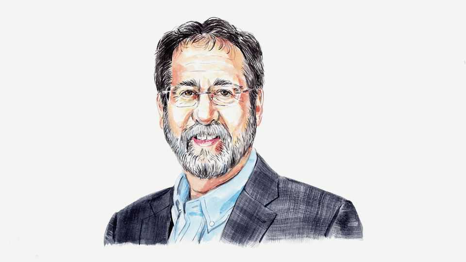

Israel’s neglected threat from within
Educational decay, driven by demographic change, endangers the nation’s future, writes Dan Ben-David

Sep 10th 2026
ISRAEL IS A story of profound changes on massive scales at extraordinary speeds. Many have driven remarkable progress, while others, particularly in recent years, threaten the country’s future—chief among them the exponential growth of very poorly educated parts of the population. The parliamentary elections on October 27th may be Israel’s last chance to pull back from a demographic-democratic point of no return by making the policy changes needed to return the country to a sustainable trajectory.
In 1949, a year after independence, agriculture made up 64% of Israel’s exports. Today that share is a mere 0.6%. High-tech is Israel’s main engine of growth, accounting for roughly half of its exports.
This outcome was not happenstance. Though relatively poor at the time, Israel built research universities during its first two and a half decades, with university faculty rising over nine-fold as a share of the population. Today two Israeli universities, Tel Aviv University and the Technion, are among the world’s top ten for producing startup founders, according to Pitchbook. In recent years Israel’s venture-capital investment as a share of GDP was more than twice the level in America and over 15 times the average of all other OECD countries. Its foreign-financed research-and-development share was 13 times the OECD average.
And yet Israel’s overall labour productivity is in the bottom half of OECD countries. In 2022 GDP per hour worked in high-tech was 22% above the OECD average. In the rest of the economy, where roughly 90% of Israelis work, it was 24% below. In 2024, 20% of Israel’s workforce paid 93% of the country’s income tax, up from 83% in 2000, while half the workforce was too poor to reach the income-tax threshold. In a country of 10m, just 300,000 people work in high-tech jobs within the high-tech sector, as physicians or as senior faculty in research universities.
A big driver of this asymmetry has been an education system that is one of the developed world’s most dysfunctional. Israel ranks near the bottom of the OECD in PISA’s maths, science and reading exams. Roughly half of Israeli children receive a core education below levels in many developing countries. Worse, this cohort belongs to its fastest-growing population groups, posing a growing threat to the nation’s future.
One group in particular, the Haredim, is propelling Israel’s current transformation. The vast majority of these ultra-Orthodox Jews insist on a wholly separate education system that deliberately deprives their children—particularly the boys—of the core education needed for economic self-sufficiency and an understanding of basic civil rights and liberties. Haredim believe that from the age of 13 boys should only be studying the Torah (and in earlier years only an hour or two a day of secular subjects).
Whereas most Israeli population groups have fertility rates of around two children per woman, the Haredi rate is nearly seven. Consequently, the Haredi share of the population doubles every 25 years, far outpacing all other groups. The most recent data from the Central Bureau of Statistics show that in 2023 Haredim comprised just 6% of 50- to 54-year-olds, compared with 26% of children under five.
Israel’s towns provide a glimpse of the magnitude of this challenge, and the speed of the changes it is generating. The four municipalities with the greatest socioeconomic decline since 1995 all experienced rapid demographic change, driven by high fertility among the least-educated population groups—not least ultra-Orthodox communities—and the departure of the more educated and skilled. In Jerusalem, one of these municipalities, secular Jewish students have fallen from a third of all students three and a half decades ago to just 9% today.
The city of Arad vividly illustrates this demographic transformation. In 2000, 75% of its primary-school students were in the secular Jewish stream and 21% in the Haredi stream. By 2026 the shares had reversed: 75% were Haredi and 20% secular. Haredi intolerance of all who are unlike them acts as an accelerant to the process by driving away secular Israelis.
Other municipalities are heading in the same direction as these. What will happen if the entire country begins to resemble them? This is the main existential challenge facing Israel today—one that is finally becoming a big issue among voters.
Key to moving Israel onto a sustainable long-term path is a complete overhaul of its education system. This must include an upgrade of the national core curriculum—still possible while Israel has some of the world’s best universities to help shape more advanced educational programmes. But an upgrade is not enough; the curriculum must also be compulsory for every child. While non-core curricula can and should accommodate local and parental preferences, no parent should be permitted to deny children the basic education needed to compete in a global economy and understand the fundamental principles of liberal democracy.
Incentivising this overhaul requires a big shift in government budgetary priorities, beginning with defunding of schools that do not provide the upgraded core curriculum in its entirety. It continues with termination of direct and in-kind subsidies to Haredim that currently exceed total public funding for all of Israel’s hospitals and universities combined. Is it any wonder that employment rates among prime working-age Haredi men are a quarter lower today than in the late 1970s?
The worst four years in Israel’s history have made it clear where it is headed. The October elections may provide the best opportunity yet to put the country back on a sustainable path. It is on Israelis to separate the wheat from the chaff—not throwing money at problems but dealing directly with their root causes. We need leaders with the resolve for a complete overhaul of Israel’s education system and budgetary priorities while it’s still possible to find a Knesset majority to do so.■
Dan Ben-David is president of the Shoresh Institution for Socioeconomic Research and emeritus professor of economics at Tel Aviv University.